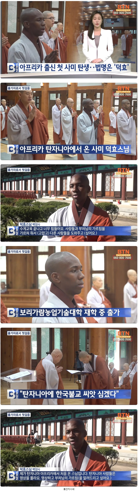

애초에 보리가람 대학교라는거 자체가 기독교의 미션스쿨이랑 비슷한거 같아보이는데
농대면 진짜 국가의 동량지재로 쓰려고 유학보내준 거 같은데 여기서 출가 테크 타버리네 ㅋㅋㅋ
근데 사실 출가한다고해서 농업기술 쓰면 안된다는것도 없으니 오히려 돈 안받고 농업기술 전파하면서 불교전파하면 나쁘지 않을지도.
???: 아무튼 탔죠
불교가 의외로 외노자들 보호해주는 역할도 하고 있다는 건 알고 있었는데,
출가까지 받아주네 ㄷㄷ
참종교다 진짜..
잘생겼네
인자 니 이름은 덕효여~
애슐리영 닮았다
힙해 보인다 ㅋ 잘생겼어
중국 일본 불교는 뭔가 이상하긴 해
한국불교가 제일 친숙한 느낌임
한국이랑 약간 다른가?
물론 일본은 신토 영항 섞여서 그런거 같긴 하다만
일본 불교는 토속신앙과 섞여서 요상하게 변했고 중국은 일당독재니까 알지?
한국인이니까 당연히 한국 불교가 친숙하지않을까?
나라마다 불교 옷도 다르더만
두상이 참 예뻐
그동안 없었구나
우리 카페에도 아랍쪽이신거같은데 한국말 조금하시는 여자 스님 종종오심
흑승
해외에서까지 불교를 배우려는 자세는 욕심일까 아닐까
배움을 추구하는건 욕심으로 분류 안 되지 않을까
모든 집착을 버려야 하면 배움의 집착도 버려야 하는거 아님? 근데 배우는것 까지 집착이라면 집착을 버리는것에 집착하는거 아님? 그럼 집착을 버리는 집착도 버려야 하는거 아님? 그래서 열심히 배우면 배우는데 집착하는거 아님?
집착을 버려야한다는 집착을 버려!
보통 그걸로 현경 들어감
집착인지 아닌지 따지는것은 불자스럽지 않아
생각해보니 출가로 우리나라오면 취업비자 이런건가?
스님되면 연장 넣고?
요즘 비건들 사이에서 불교가 그렇게 핫하다던데
그럼 불교방식대로 이젠 남들한테만 채식강요안하면 좋을거같음
이제 아프리카 버전으로 변화된 반야심경을 듣게 되겠군
스와힐리어, 코사어 반야심경 존나 힙하네 캬
전직하는데 클릭 실수했네
동국대 다녔는데
캠퍼스 돌아다니면 다양한 인종의 스님들 보게됨 ㅋㅋ
불교는 뭔가 학문같은 느낌이 가장 드는것같음
부처님이란 존재도 사실 막 신 이런 존재라기 보단 먼저 깨달은 분이라는 말이 있던데
불교는 종교냐 철학이냐는 꾸준한 얘깃거리임ㅋㅋ
종교라기엔 부처님은 신 이런 존재가 아니라서 애매하고 철학이라기엔 또 부처님을 모시는 곳이라 애매하네 ㅋㅋ
뭐랄까 인류 최초의 심리학자 같음
인류 최초의 심리학자 ㅋㅋㅋ 그런거도 포함되는거 맞는듯
도쿄스님
조던이 보이넼ㅋㅋㅋㅋ
전 수도인 다르에스살람 가면 힌두교 사원 많음.
이제 카톨릭, 이슬람, 힌두에 이어 불교도 뛰어 드네
...
이거 완전 종교 전쟁...
울집 근처에 스리랑카 스님도 많이 계시는데 신기함 ㅋㅋㅋㅋㅋ 한국말 엄청 잘하심
외노자출신으로 왔다가 출가하신듯 ㄷ
방금 태국 유명 땡중 37억 횡령하고 신도하고 떡치는 영상 걸린 뉴스 보고 왔는데ㅋㅋ
초코볼
아니 왜 갑자기 농대 다니다가 스님 테크를 ㅋㅋㅋㅋㅋㅋㅋㅋㅋㅋㅋㅋㅋㅋ
저 보리가람대학교도 탄자니아에 있는 학교인데
집안은 아버지 여의고 가난한 집안이라
학비를 대주는 보리가람농업기술대학 원예과 진학했다함
탄자니아에서 중등학교 재학 →
보리가람농업기술대학 부설 세종학당에서 한국어를 배움 →
보리가람농업기술대학 원예과 진학 →
학교 법당과 한국 스님들을 통해 불교를 본격적으로 접함 →
출가 결심 →
탄자니아와 한국에서 행자교육 →
한국 직지사에서 사미계 수지
이런 테크 탄거 같은데
신기하네